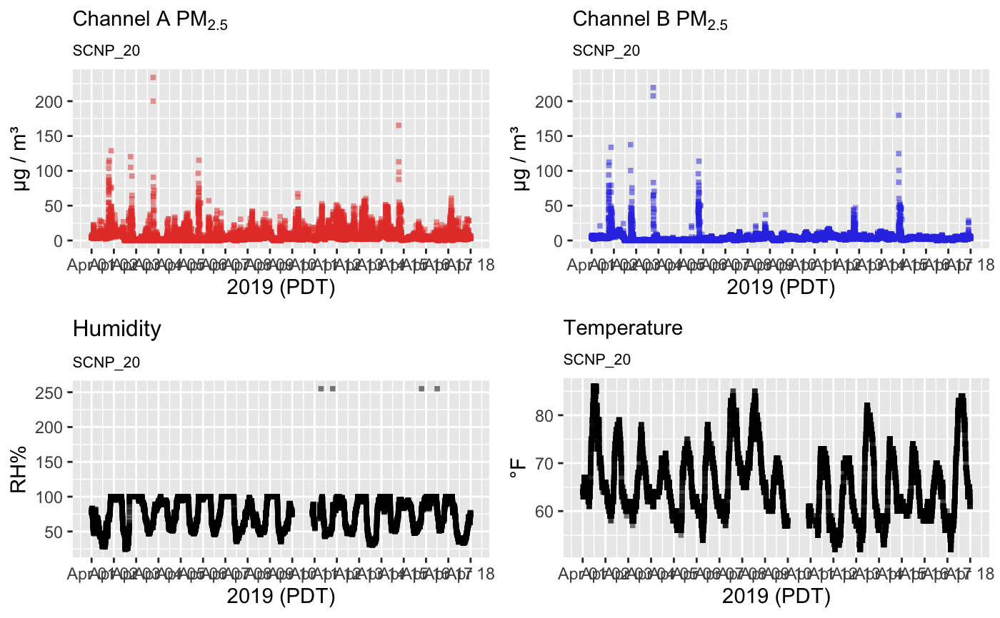
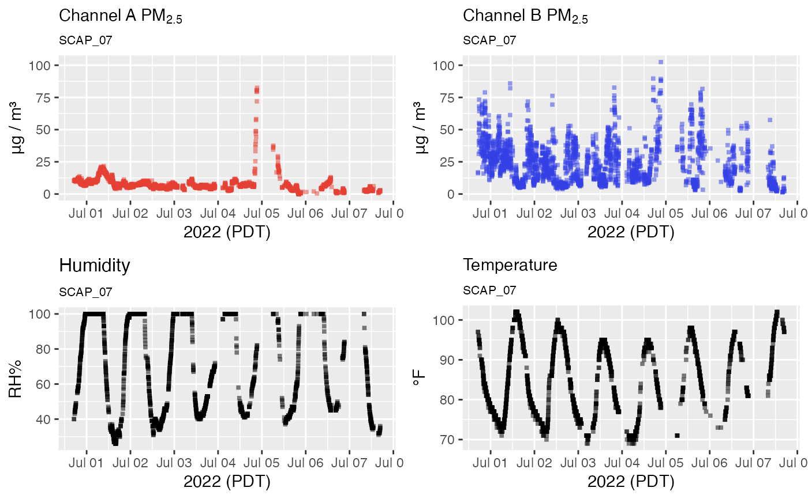

Optionally applies QC thresholds to a pat object based on the documented specs of the PurpleAir sensor.
The pat_load() function returns raw "engineering" data for a
PurpleAir Sensor. The very first level of QC that should always be applied
is the removal of out-of-spec values that should never be generated by the
sensor components. Out-of-spec values imply an electrical or software problem
and can never be considered valid measurements.
Setting a max_humidity threshold is less fundamental. There are many
cases where PM2.5 readings during periods of high humidity should be called
into question which is why this QC option is provided. However, this type of
filtering is dependent upon a properly functioning humidity sensor. Humidity
filtering is disabled by default because it can result in the invalidation
of many potentially valid PM2.5 measurements.
pat_qc(pat = NULL, removeOutOfSpec = TRUE, max_humidity = NULL)Arguments
- pat
PurpleAir Timeseries pat object
- removeOutOfSpec
Logical determining whether measurements that are out of instrument specs should be invalidated.
- max_humidity
Maximum humidity threshold above which pm25 measurements are invalidated. Disabled unless explicitly set.
Value
A cleaned up pat object.
Details
Out of spec thresholds are set so that anything outside of these the given range should represent a value that is not physically possible in an ambient setting on planet Earth.
humidity-- [0:100]temperature-- [-40:185]pm25-- [0:2000]
References
Examples
# \donttest{
library(AirSensor)
# Use a sensor with problems
pat <- example_pat
# Basic plot shows out-of-spec values for humidity
pat %>% pat_multiPlot(sampleSize = NULL)

# Applying QC removes these records
pat %>% pat_qc() %>% pat_multiPlot(sampleSize = NULL)

# We can also remove PM2.5 data at high humidities
pat %>% pat_qc(max_humidity = 80) %>% pat_multiPlot(sampleSize = NULL)
#> Warning: Removed 1011 rows containing missing values (`geom_point()`).
#> Warning: Removed 1011 rows containing missing values (`geom_point()`).
 # }
# }